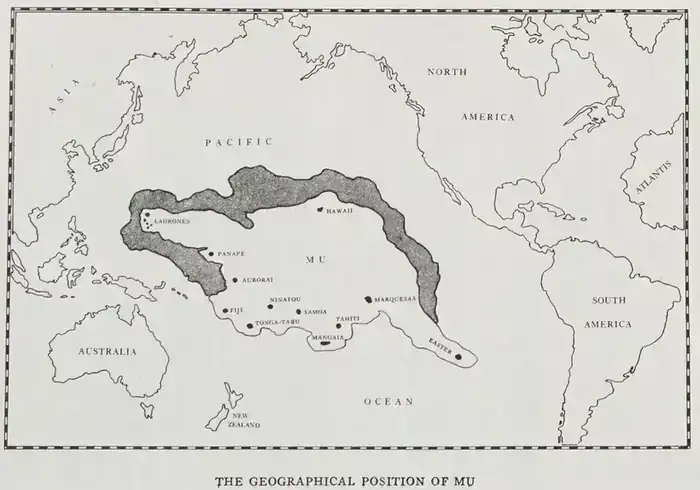

This is the cleanest case in the archive of a scientific placeholder escaping into myth. You can watch it happen in the documents, decade by decade, with names and dates.
Maps, diagrams and images


Lemuria: a zoologist's land bridge
In April 1864, the British zoologist Philip Lutley Sclater published a paper in The Quarterly Journal of Science proposing a submerged land connection between Madagascar and India. His reason was entirely practical: lemurs live in both places and nowhere in between, and in an age before plate tectonics the usual explanation for that was a land bridge.
He named it Lemuria, after the lemurs. Ernst Haeckel then proposed the same bridge as a possible cradle of humanity. Both men were reasoning from the evidence available; both were also wrong in the way that pre-plate-tectonics biogeography was wrong.
Plate tectonics dissolved the need for the bridge. India and Madagascar separated, and the lemurs were on the right side of the split. Sclater's hypothesis was abandoned by zoology.
What happened next
In 1888 Helena Petrovna Blavatsky published The Secret Doctrine, and Lemuria became something else entirely: the home of the “third root race”, a civilisation of giant, telepathic beings destroyed in a cataclysm, with Atlantis following as the fourth.
This is the moment the concept changes genre. Blavatsky's system was explicitly racialised — a hierarchy of “root races” with superior and inferior branches — and historians of the period note that it fed directly into the racial pseudoscience of the early twentieth century. It is worth saying plainly: the Theosophical Lemuria is not a charming folktale, and its afterlife includes some genuinely ugly material.
Mu is the Pacific cousin, popularised by James Churchward from the 1920s, and it has the same structure: a lost mother civilisation, a sunken continent, and a claim that its wisdom survives in fragments.
Atlantis and Hyperborea, briefly
Atlantis comes from Plato — a moral allegory, not a travel report; see Underwater Worlds. Hyperborea was a Greek legendary northern land of eternal spring, mentioned by Herodotus and Pindar, and it has been relocated to the Arctic, to Britain, and to the interior of the Earth by different writers. Neither has an archaeological site, and both have been searched for continuously for two centuries.
There are real lost lands, and they are better than the myths in one specific way: they have maps and dates.
- Zealandia — a 4.9 million km² region of continental crust in the southwest Pacific, formerly part of Gondwana, now 94% submerged. A 2017 paper in GSA Today argues it should be recognised as a continent, not a collection of fragments. It is real; it is just mostly underwater.
- Sundaland — the exposed Sunda Shelf, which joined Sumatra, Java, Borneo and the Malay Peninsula during low sea levels of the last glacial period, and was drowned as the ice melted.
- Doggerland — the North Sea bed that connected Britain to continental Europe until the Holocene sea-level rise. Fishing trawlers have brought up mammoth bones and worked flint from it for a century.
- Kerguelen Plateau, Maui Nui, Ferdinandea — a partly submerged microcontinent, a drowned Hawaiian island, and a volcanic island that has surfaced and sunk at least four times.
None of these hosted a lost civilisation with psychic powers. All of them were real places where people or animals lived, and their shorelines are now under water — which is exactly the seed that the Lemuria story grew from, and the reason it feels plausible.
The Tamil Kumari Kandam
There is a separate and older tradition: Tamil literature describes a lost southern land, Kumari Kandam, swallowed by the sea. Colonial-era writers, encountering this, merged it with Lemuria — a fusion that Frontline (The Hindu) traced in 2011 as an example of how a Western invented continent got absorbed into a local myth and then returned as “evidence”.
That fusion matters for how this archive reads: the same story can be independently true as literature and false as geography, and the two get welded together by people with an interest in the welding.
The pattern
A hypothesis with a gap in it → a name → an occult system that fills the gap with civilisations → a century of paperbacks → a documentary. Plate tectonics closes the original gap, and nothing happens to the myth, because the myth stopped needing the gap long ago.
Compare the expanding Earth, which lost its gap and faded, with Lemuria, which lost its gap and became a franchise. The difference is not evidence. It is narrative.
Sources for this page
- GSA Today (2017), “Zealandia: Earth’s Hidden Continent”geosociety.org
- Wikipedia, “Lost lands” — Sclater, 1864, and the plate-tectonic resolutionen.wikipedia.org
- Sundaland Research Program, “Lemuria and Mu”atlantisjavasea.com
- Big Think, “Lemuria, the weirdest continent that never existed”bigthink.com
- Natural History, “Lost Continents” — the scientific abandonment of Lemurianaturalhistorymag.com
- Ex Carta, “Drowned Worlds” — Blavatsky, root races, and the racial legacyoculi-mundi.com
- Frontline (The Hindu), “The Lemuria myth” — Kumari Kandamfrontline.thehindu.com
Open resources on this topic
- Booklost continents: the atlantis theme in history, science, and literature — l. sprague de camp · 1954 (Internet Archive, free to read)
- BookLost Continents And The Hollow Earth (Internet Archive, free to read)
- BookUnderstanding the lost continents for the millions — Marilyn Seal Pierce · 1969 (Internet Archive, free to read)
- PapersOpen-access articles: DOAJ · PubMed Central · Internet Archive Scholar
- BooksPublic-domain and borrowable copies: Open Library · Project Gutenberg · Google Books
More images
Cite this page
Momin, S. (2026). Lost Continents. The Larger World Archive. https://drsamonline.github.io/LARGE_GLOBE/lost-continents.htmlMomin, Sohil. “Lost Continents.” The Larger World Archive, 2026, https://drsamonline.github.io/LARGE_GLOBE/lost-continents.html.Momin, Sohil. “Lost Continents.” The Larger World Archive, 2026. https://drsamonline.github.io/LARGE_GLOBE/lost-continents.html.@misc{lost2026lost,
author = {Momin, Sohil},
title = {Lost Continents},
year = {2026},
howpublished = {The Larger World Archive},
url = {https://drsamonline.github.io/LARGE_GLOBE/lost-continents.html},
note = {Last reviewed 20 November 2026}
}Last reviewed 20 November 2026 · Corrections policy · this page is not peer reviewed